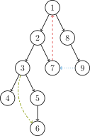

OI Wiki · prijevod · Teorija grafovaOI Wiki · translation · Graph theory
Jako povezane komponenteStrongly connected components
Sadržaj
Uvod
Prije čitanja obvezno se upoznajte s osnovnim dijelom Osnovnih pojmova teorije grafova.
Definicija jake povezanosti: usmjeren graf G jako je povezan ako su svaka dva vrha grafa G međusobno dostižna.
Definicija jako povezane komponente (Strongly Connected Component, SCC): maksimalan jako povezan podgraf.
Ovdje opisujemo kako naći jako povezane komponente.
Tarjanov algoritam
Uvod
Robert E. Tarjan (1948.–), rođen u Pomoni u Kaliforniji (SAD), računalni je znanstvenik.
Tarjan je izumio mnoge algoritme i strukture podataka. Mnogi od njih nose njegovo ime, pa se različiti algoritmi katkad brkaju: npr. Tarjanov algoritam za razne vrste povezanih komponenata i Tarjanov algoritam za LCA (Lowest Common Ancestor, najniži zajednički predak). Tarjan je izumio i DSU (union-find), splay stablo i top tree.
Ovdje opisujemo Tarjanov algoritam za traženje jako povezanih komponenata u usmjerenom grafu.
DFS razapinjuće stablo
Prije opisa algoritma upoznajmo DFS razapinjuće stablo na primjeru sljedećeg usmjerenog grafa:

Kad na usmjerenom grafu \(G\) pokrenemo DFS, zbog usmjerenosti bridova iz jednog vrha možda nećemo moći posjetiti sve vrhove grafa. Zato moramo proći cijeli skup vrhova: za svaki još neposjećeni vrh pokrećemo novi DFS. Stablasti bridovi (vidi dolje) kroz koje prolazi svaki pojedini DFS pokrenut iz nekog početnog vrha tvore stablo koje zovemo DFS razapinjuće stablo. Kad su svi vrhovi posjećeni, sva dobivena DFS razapinjuća stabla zajedno tvore DFS razapinjuću šumu usmjerenog grafa.
Napomena: konkretan oblik razapinjućeg stabla (i šume), kao i klasifikacija bridova u nastavku, ovise o izboru početnog vrha DFS-a i o redoslijedu obilaska susjeda.
Bridovi usmjerenog grafa \(G\) dijele se u četiri vrste:
- Stablasti bridovi (tree edge): na slici crni; stablasti brid nastaje svaki put kad pretraga nađe još neposjećen vrh. Svi susjedni stablasti bridovi tvore DFS razapinjuće stablo.
- Povratni bridovi (back edge): na slici crveni (tj. \(7 \rightarrow 1\)); nestablasti brid koji tijekom pretrage vodi iz nekog vrha u njegova pretka.
- Prednji bridovi (forward edge): na slici zeleni (tj. \(3 \rightarrow 6\)); nestablasti brid koji tijekom pretrage vodi iz nekog vrha u njegova potomka u podstablu.
- Poprečni bridovi (cross edge): na slici plavi (tj. \(9 \rightarrow 7\)); brid koji tijekom pretrage vodi iz nekog vrha u već posjećen vrh koji mu nije ni predak ni potomak, tj. brid koji ne pripada nijednoj od triju prethodnih vrsta.
Razmotrimo odnos DFS razapinjućeg stabla i jako povezanih komponenata.
Ako je vrh \(u\) prvi vrh neke jako povezane komponente na koji smo naišli u stablu pretrage, onda su ostali vrhovi te komponente sigurno u podstablu s korijenom \(u\). Vrh \(u\) zove se korijen te jako povezane komponente.
Dokaz kontradikcijom: pretpostavimo da postoji vrh \(v\) u toj jako povezanoj komponenti koji nije u podstablu s korijenom \(u\). Tada na putu od \(u\) do \(v\) sigurno postoji brid koji napušta podstablo. No takav brid može biti samo poprečni ili povratni, a oba zahtijevaju da je vrh u koji vode već posjećen, što je u suprotnosti s time da \(v\) nije u podstablu s korijenom \(u\). Time je dokaz završen.
Tarjanov algoritam za jako povezane komponente
Tarjanov algoritam temelji se na pretraživanju u dubinu grafa. Svaku povezanu komponentu promatramo kao podstablo stabla pretrage; tijekom pretrage održavamo stog, na njega stavljamo još neobrađene vrhove stabla pretrage, a s njega skidamo vrhove za koje je odgovor utvrđen.
U Tarjanovu algoritmu za svaki vrh \(u\) održavamo sljedeće varijable:
- \(\textit{dfn}_u\): redni broj kojim je vrh \(u\) posjećen tijekom pretraživanja u dubinu.
- \(\textit{low}_u\): najraniji vrh koji je još na stogu, a do kojeg se može vratiti iz podstabla vrha \(u\). Neka je \(\textit{Subtree}_u\) podstablo stabla pretrage s korijenom \(u\). \(\textit{low}_u\) definira se kao najmanji \(\textit{dfn}\) sljedećih vrhova: vrhova na stogu do kojih se iz \(\textit{Subtree}_u\) može doći jednim bridom koji nije u stablu pretrage.
Vrijednosti dfn svih vrhova u podstablu nekog vrha veće su od dfn tog vrha.
Na putu od korijena dfn strogo raste, a low je nepadajuće.
Sve vrhove grafa pretražujemo redoslijedom pretraživanja u dubinu, održavamo varijable dfn i low svakog vrha i posjećene vrhove stavljamo na stog. Svaki put kad nađemo jako povezanu komponentu, sa stoga skinemo onoliko elemenata koliko ona ima vrhova. Tijekom pretrage, za vrh \(u\) i njegova susjeda \(v\) (\(v\) nije roditelj vrha \(u\)) razlikujemo 3 slučaja:
- \(v\) nije posjećen: nastavi pretraživanje u dubinu iz \(v\). Pri povratku ažuriraj \(\textit{low}_u\) pomoću \(\textit{low}_v\). Budući da postoji izravan put od \(u\) do \(v\), do vrha na stogu do kojeg se može vratiti \(v\) može se vratiti i \(u\).
- \(v\) je posjećen i još je na stogu: prema definiciji vrijednosti low ažuriraj \(\textit{low}_u\) pomoću \(\textit{dfn}_v\).
- \(v\) je posjećen i više nije na stogu: to znači da je pretraga iz \(v\) završena i da je njegova komponenta već obrađena, pa ništa ne radimo.
Za graf koji je jedna povezana komponenta lako je uočiti da u njemu postoji točno jedan vrh \(u\) za koji vrijedi \(\textit{dfn}_u=\textit{low}_u\). To je nužno vrh te komponente koji je u pretraživanju u dubinu posjećen prvi, jer su mu dfn i low najmanji i ostali vrhovi komponente ne mogu na njih utjecati.
Stoga pri povratku iz rekurzije provjeravamo vrijedi li \(\textit{dfn}_u=\textit{low}_u\); ako vrijedi, vrh \(u\) i vrhovi iznad njega na stogu tvore jednu SCC.
Gornji algoritam zapisan pseudokodom:
Implementacija
TARJAN_SEARCH(int u)
vis[u]=true
low[u]=dfn[u]=++dfncnt
push u to the stack
for each (u,v) then do
if v hasn't been searched then
TARJAN_SEARCH(v) // pretraži
low[u]=min(low[u],low[v]) // povratak iz rekurzije
else if v has been in the stack then
low[u]=min(low[u],dfn[v])
if dfn[u] equal to low[u] then
++scccnt
while top of stack not equal to u then
scc[top of stack] = scccnt
pop stack
scc[u] = scccnt
pop stack // obradi i skini preostali u
Implementacija
int dfn[N], low[N], dfncnt, s[N], in_stack[N], tp;
int scc[N], sc; // oznaka SCC-a kojem pripada vrh i
int sz[N]; // veličina jako povezane komponente i
void tarjan(int u) {
low[u] = dfn[u] = ++dfncnt, s[++tp] = u, in_stack[u] = 1;
for (int i = h[u]; i; i = e[i].nex) {
const int &v = e[i].t;
if (!dfn[v]) {
tarjan(v);
low[u] = min(low[u], low[v]);
} else if (in_stack[v]) {
low[u] = min(low[u], dfn[v]);
}
}
if (dfn[u] == low[u]) {
++sc;
do {
scc[s[tp]] = sc;
sz[sc]++;
in_stack[s[tp]] = 0;
} while (s[tp--] != u);
}
}
dfn = [0] * N
low = [0] * N
dfncnt = 0
s = [0] * N
in_stack = [0] * N
tp = 0
scc = [0] * N
sc = 0 # oznaka SCC-a kojem pripada vrh i
sz = [0] * N # veličina jako povezane komponente i
def tarjan(u):
low[u] = dfn[u] = dfncnt
s[tp] = u
in_stack[u] = 1
dfncnt = dfncnt + 1
tp = tp + 1
i = h[u]
while i:
v = e[i].t
if dfn[v] == False:
tarjan(v)
low[u] = min(low[u], low[v])
elif in_stack[v]:
low[u] = min(low[u], dfn[v])
i = e[i].nex
if dfn[u] == low[u]:
sc = sc + 1
while s[tp] != u:
scc[s[tp]] = sc
sz[sc] = sz[sc] + 1
in_stack[s[tp]] = 0
tp = tp - 1
scc[s[tp]] = sc
sz[sc] = sz[sc] + 1
in_stack[s[tp]] = 0
tp = tp - 1
Vremenska složenost \(O(n + m)\).
Odnos oznaka komponenata i topološkog poretka
Tarjanov algoritam tijekom rada zapravo otkriva jako povezane komponente u nekom obrnutom topološkom poretku, jer tijekom pretraživanja u dubinu prvo dovršava vrhove koji nemaju izlaznih bridova, što je suprotno postupku topološkog sortiranja.
Ako sve jako povezane komponente grafa sažmemo u pojedinačne vrhove, topološko sortiranje DAG-a koji tvore ti sažeti vrhovi daje poredak suprotan redoslijedu oznaka jako povezanih komponenata koje daje Tarjanov algoritam.
Stoga možemo reći da je u sažetom DAG-u redoslijed oznaka jako povezanih komponenata (nakon sažimanja) obrnut njihovu topološkom poretku. Treba napomenuti da to vrijedi samo kad promatramo ovisnosti između jako povezanih komponenata (tj. usmjerene bridove iz jedne jako povezane komponente u drugu). Vrhovi unutar jedne jako povezane komponente zbog ciklusa ne zadovoljavaju definiciju topološkog poretka.
Kosarajuov algoritam
Uvod
Kosarajuov algoritam prvi je 1978. predložio S. Rao Kosaraju u neobjavljenom radu, a prvi ga je objavio Micha Sharir.
Postupak
Algoritam se oslanja na dva jednostavna DFS-a:
U prvom DFS-u biramo proizvoljan vrh kao početni, obilazimo sve neposjećene vrhove i vrhove numeriramo prije povratka iz rekurzije, tj. u postorder redoslijedu.
U drugom DFS-u, na obrnutom grafu, pokrećemo DFS iz vrha s najvećom oznakom. Skup tako posjećenih vrhova jedna je jako povezana komponenta. Među svim neposjećenim vrhovima ponovno biramo onaj s najvećom oznakom i ponavljamo postupak.
Nakon dvaju DFS-ova jako povezane komponente su pronađene; vremenska složenost Kosarajuova algoritma je \(O(n+m)\).
Implementacija
// g je izvorni graf, g2 je obrnuti graf
void dfs1(int u) {
vis[u] = true;
for (int v : g[u])
if (!vis[v]) dfs1(v);
s.push_back(u);
}
void dfs2(int u) {
color[u] = sccCnt;
for (int v : g2[u])
if (!color[v]) dfs2(v);
}
void kosaraju() {
sccCnt = 0;
for (int i = 1; i <= n; ++i)
if (!vis[i]) dfs1(i);
for (int i = n - 1; i >= 0; --i)
if (!color[s[i]]) {
++sccCnt;
dfs2(s[i]);
}
}
def dfs1(u):
vis[u] = True
for v in g[u]:
if vis[v] == False:
dfs1(v)
s.append(u)
def dfs2(u):
color[u] = sccCnt
for v in g2[u]:
if color[v] == False:
dfs2(v)
def kosaraju(u):
sccCnt = 0
for i in range(1, n + 1):
if vis[i] == False:
dfs1(i)
for i in range(n - 1, -1, -1):
if color[s[i]] == False:
sccCnt = sccCnt + 1
dfs2(s[i])
Gabowov algoritam
Postupak
Gabowov algoritam druga je implementacija Tarjanova algoritma. Tarjanov algoritam korijen jako povezane komponente određuje pomoću dfn i low, a Gabow održava stog vrhova i drugi stog kojim određuje kada s prvog stoga treba skinuti vrhove koji pripadaju istoj jako povezanoj komponenti. Tijekom DFS-a iz vrha \(w\), kad neki put pokaže da skupina vrhova pripada istoj jako povezanoj komponenti, s drugog stoga skidamo vrhove dok god je vrijeme posjeta vrha na vrhu stoga veće od vremena posjeta korijena \(w\), tako da na kraju ostane samo korijen \(w\). Svi vrhovi skinuti u tom postupku pripadaju istoj jako povezanoj komponenti.
Kad se vratimo u neki vrh \(w\) i on je na vrhu drugog stoga, znači da je \(w\) početni vrh jako povezane komponente, a vrhovi pretraženi nakon njega pripadaju istoj komponenti; tada ih skidamo s prvog stoga i oni tvore jako povezanu komponentu.
Implementacija
int garbow(int u) {
stack1[++p1] = u;
stack2[++p2] = u;
low[u] = ++dfs_clock;
for (int i = head[u]; i; i = e[i].next) {
int v = e[i].to;
if (!low[v])
garbow(v);
else if (!sccno[v])
while (low[stack2[p2]] > low[v]) p2--;
}
if (stack2[p2] == u) {
p2--;
scc_cnt++;
do {
sccno[stack1[p1]] = scc_cnt;
// all_scc[scc_cnt] ++;
} while (stack1[p1--] != u);
}
return 0;
}
void find_scc(int n) {
dfs_clock = scc_cnt = 0;
p1 = p2 = 0;
memset(sccno, 0, sizeof(sccno));
memset(low, 0, sizeof(low));
for (int i = 1; i <= n; i++)
if (!low[i]) garbow(i);
}
def garbow(u):
stack1[p1] = u
stack2[p2] = u
p1 = p1 + 1
p2 = p2 + 1
low[u] = dfs_clock
dfs_clock = dfs_clock + 1
i = head[u]
while i:
v = e[i].to
if low[v] == False:
garbow(v)
elif sccno[v] == False:
while low[stack2[p2]] > low[v]:
p2 = p2 - 1
if stack2[p2] == u:
p2 = p2 - 1
scc_cnt = scc_cnt + 1
while stack1[p1] != u:
p1 = p1 - 1
sccno[stack1[p1]] = scc_cnt
def find_scc(n):
dfs_clock = scc_cnt = 0
p1 = p2 = 0
sccno = []
low = []
for i in range(1, n + 1):
if low[i] == False:
garbow(i)
Primjene
Svaku jako povezanu komponentu grafa možemo sažeti u jedan vrh.
Graf tada postaje DAG, na kojem možemo provesti topološko sortiranje i mnoge druge operacije.
Jednostavan primjer: nađi put koji smije ponavljati vrhove, a prolazi kroz najveći mogući broj različitih vrhova.
Zadaci za vježbu
Contents
Introduction
Before reading the following, make sure you are familiar with the basics in Graph theory concepts.
Definition of strong connectivity: a directed graph G is strongly connected if any two vertices of G are mutually reachable.
Definition of a strongly connected component (SCC): a maximal strongly connected subgraph.
Here we introduce how to find strongly connected components.
Tarjan's algorithm
Introduction
Robert E. Tarjan (1948–), born in Pomona, California, USA, is a computer scientist.
Tarjan invented many algorithms and data structures. Many of the algorithms he invented are named after him, so that several different algorithms are sometimes confused: for example Tarjan's algorithm for various kinds of connected components and Tarjan's algorithm for LCA (Lowest Common Ancestor). The DSU (union-find), splay trees and top trees were also invented by Tarjan.
Here we introduce Tarjan's algorithm for finding strongly connected components in a directed graph.
DFS spanning tree
Before introducing the algorithm, let us get to know the DFS spanning tree, using the following directed graph as an example:
When running DFS on a directed graph \(G\), because edges are directed, we may not be able to visit all vertices of the graph starting from a single vertex. Therefore we need to iterate over the whole vertex set: for every vertex not yet visited, we start a new DFS. In each DFS started from some initial vertex and run to completion, the tree edges (see below) it traverses form a tree, called a DFS spanning tree. After all vertices have been visited, all the DFS spanning trees obtained together form the DFS spanning forest of the directed graph.
Note that the concrete structure of the spanning tree (and spanning forest), as well as the edge classification below, depend on the choice of the DFS starting vertex and the order in which neighbors are visited.
The edges of a directed graph \(G\) can be divided into four classes:
- Tree edges: shown in black in the picture; a tree edge is formed every time the search finds a vertex that has not been visited yet. All adjacent tree edges form the DFS spanning tree.
- Back edges: shown in red in the picture (i.e. \(7 \rightarrow 1\)); a non-tree edge that, during the search, goes from a vertex to one of its ancestors.
- Forward edges: shown in green in the picture (i.e. \(3 \rightarrow 6\)); a non-tree edge that, during the search, goes from a vertex to a descendant in its subtree.
- Cross edges: shown in blue in the picture (i.e. \(9 \rightarrow 7\)); an edge that, during the search, goes from a vertex to an already visited vertex that is neither an ancestor nor a descendant, i.e. an edge not belonging to any of the three classes above.
Let us consider the relationship between the DFS spanning tree and strongly connected components.
If vertex \(u\) is the first vertex of some strongly connected component encountered in the search tree, then the remaining vertices of this strongly connected component must be in the subtree of the search tree rooted at \(u\). Vertex \(u\) is called the root of this strongly connected component.
Proof by contradiction: suppose there is a vertex \(v\) in this strongly connected component that is not in the subtree rooted at \(u\). Then the path from \(u\) to \(v\) must contain an edge leaving the subtree. But such an edge can only be a cross edge or a back edge, and both require that the vertex they point to has already been visited, which contradicts \(v\) not being in the subtree rooted at \(u\). This completes the proof.
Tarjan's algorithm for strongly connected components
Tarjan's algorithm is based on a depth-first search of the graph. We view each connected component as a subtree of the search tree; during the search we maintain a stack, pushing the not yet processed vertices of the search tree onto it and popping the vertices whose answer has been determined.
In Tarjan's algorithm, the following variables are maintained for every vertex \(u\):
- \(\textit{dfn}_u\): the order in which vertex \(u\) is visited during the depth-first search.
- \(\textit{low}_u\): the earliest vertex still on the stack that can be reached back from the subtree of \(u\). Let \(\textit{Subtree}_u\) be the subtree of the search tree rooted at \(u\). \(\textit{low}_u\) is defined as the minimum \(\textit{dfn}\) of the following vertices: vertices on the stack reachable from \(\textit{Subtree}_u\) through one edge not in the search tree.
The dfn of every vertex in the subtree of a vertex is greater than the dfn of that vertex.
Along a path from the root, dfn is strictly increasing and low is non-decreasing.
We search all vertices of the graph in depth-first order, maintain the variables dfn and low of every vertex, and push the visited vertices onto the stack. Every time a strongly connected component is found, we pop as many elements from the stack as the component has vertices. During the search, for a vertex \(u\) and its neighbor \(v\) (\(v\) is not the parent of \(u\)) we consider 3 cases:
- \(v\) has not been visited: continue the depth-first search from \(v\). When backtracking, update \(\textit{low}_u\) with \(\textit{low}_v\). Because there is a direct path from \(u\) to \(v\), any vertex on the stack that \(v\) can reach back to can also be reached back to from \(u\).
- \(v\) has been visited and is still on the stack: by the definition of low, update \(\textit{low}_u\) with \(\textit{dfn}_v\).
- \(v\) has been visited and is no longer on the stack: this means the search from \(v\) has finished and the component containing it has been processed, so nothing needs to be done.
For a graph that is a single connected component, it is easy to see that there is exactly one \(u\) in it with \(\textit{dfn}_u=\textit{low}_u\). This vertex must be the first vertex of the component visited during the depth-first traversal, because its dfn and low are the smallest and cannot be affected by the other vertices of the component.
Therefore, when backtracking we check whether \(\textit{dfn}_u=\textit{low}_u\) holds; if so, \(u\) and the vertices above it on the stack form an SCC.
The algorithm above written as pseudocode:
Implementation
TARJAN_SEARCH(int u)
vis[u]=true
low[u]=dfn[u]=++dfncnt
push u to the stack
for each (u,v) then do
if v hasn't been searched then
TARJAN_SEARCH(v) // search
low[u]=min(low[u],low[v]) // backtrack
else if v has been in the stack then
low[u]=min(low[u],dfn[v])
if dfn[u] equal to low[u] then
++scccnt
while top of stack not equal to u then
scc[top of stack] = scccnt
pop stack
scc[u] = scccnt
pop stack // process and remove the remaining u
Implementation
int dfn[N], low[N], dfncnt, s[N], in_stack[N], tp;
int scc[N], sc; // index of the SCC containing vertex i
int sz[N]; // size of strongly connected component i
void tarjan(int u) {
low[u] = dfn[u] = ++dfncnt, s[++tp] = u, in_stack[u] = 1;
for (int i = h[u]; i; i = e[i].nex) {
const int &v = e[i].t;
if (!dfn[v]) {
tarjan(v);
low[u] = min(low[u], low[v]);
} else if (in_stack[v]) {
low[u] = min(low[u], dfn[v]);
}
}
if (dfn[u] == low[u]) {
++sc;
do {
scc[s[tp]] = sc;
sz[sc]++;
in_stack[s[tp]] = 0;
} while (s[tp--] != u);
}
}
dfn = [0] * N
low = [0] * N
dfncnt = 0
s = [0] * N
in_stack = [0] * N
tp = 0
scc = [0] * N
sc = 0 # index of the SCC containing vertex i
sz = [0] * N # size of strongly connected component i
def tarjan(u):
low[u] = dfn[u] = dfncnt
s[tp] = u
in_stack[u] = 1
dfncnt = dfncnt + 1
tp = tp + 1
i = h[u]
while i:
v = e[i].t
if dfn[v] == False:
tarjan(v)
low[u] = min(low[u], low[v])
elif in_stack[v]:
low[u] = min(low[u], dfn[v])
i = e[i].nex
if dfn[u] == low[u]:
sc = sc + 1
while s[tp] != u:
scc[s[tp]] = sc
sz[sc] = sz[sc] + 1
in_stack[s[tp]] = 0
tp = tp - 1
scc[s[tp]] = sc
sz[sc] = sz[sc] + 1
in_stack[s[tp]] = 0
tp = tp - 1
Time complexity \(O(n + m)\).
Relationship between component indices and topological order
During its execution, Tarjan's algorithm in fact discovers the strongly connected components in a certain reverse topological order, because during the depth-first search the algorithm first finishes the vertices that have no outgoing edges, which is the opposite of the topological sorting process.
If we contract all strongly connected components of the graph into single vertices, then a topological sort of the DAG formed by these contracted vertices gives an order opposite to the order of the strongly connected component indices produced by Tarjan's algorithm.
Therefore we can say that in the contracted DAG, the index order of the strongly connected components (after contraction) is the reverse of their topological order. Note, however, that this statement holds only when considering the dependencies between strongly connected components (i.e. directed edges from one strongly connected component to another). The vertices inside a single strongly connected component, because of cycles, do not satisfy the definition of a topological order.
Kosaraju's algorithm
Introduction
Kosaraju's algorithm was first proposed in 1978 by S. Rao Kosaraju in an unpublished paper, but Micha Sharir was the first to publish it.
Procedure
The algorithm relies on two simple DFS runs:
In the first DFS, pick an arbitrary vertex as the start, traverse all unvisited vertices, and number the vertices before backtracking, i.e. in post-order.
In the second DFS, on the reversed graph, start a DFS from the vertex with the largest number. The set of vertices visited this way is one strongly connected component. Among all unvisited vertices, pick the one with the largest number and repeat the process.
After the two DFS runs, the strongly connected components have been found; the time complexity of Kosaraju's algorithm is \(O(n+m)\).
Implementation
// g is the original graph, g2 is the reversed graph
void dfs1(int u) {
vis[u] = true;
for (int v : g[u])
if (!vis[v]) dfs1(v);
s.push_back(u);
}
void dfs2(int u) {
color[u] = sccCnt;
for (int v : g2[u])
if (!color[v]) dfs2(v);
}
void kosaraju() {
sccCnt = 0;
for (int i = 1; i <= n; ++i)
if (!vis[i]) dfs1(i);
for (int i = n - 1; i >= 0; --i)
if (!color[s[i]]) {
++sccCnt;
dfs2(s[i]);
}
}
def dfs1(u):
vis[u] = True
for v in g[u]:
if vis[v] == False:
dfs1(v)
s.append(u)
def dfs2(u):
color[u] = sccCnt
for v in g2[u]:
if color[v] == False:
dfs2(v)
def kosaraju(u):
sccCnt = 0
for i in range(1, n + 1):
if vis[i] == False:
dfs1(i)
for i in range(n - 1, -1, -1):
if color[s[i]] == False:
sccCnt = sccCnt + 1
dfs2(s[i])
Gabow's algorithm
Procedure
Gabow's algorithm is another implementation of Tarjan's algorithm. Tarjan's algorithm uses dfn and low to compute the root of a strongly connected component, whereas Gabow maintains a stack of vertices and uses a second stack to determine when to pop the vertices belonging to the same strongly connected component from the first stack. During the DFS starting from vertex \(w\), when a path shows that a group of vertices all belong to the same strongly connected component, we pop vertices from the second stack as long as the visiting time of the vertex on top of the stack is greater than the visiting time of the root \(w\), so that in the end only the root \(w\) remains. Every vertex popped during this process belongs to the same strongly connected component.
When backtracking to some vertex \(w\), if this vertex is on top of the second stack, then it is the starting vertex of a strongly connected component, and the vertices searched after it belong to the same strongly connected component, so we pop those vertices from the first stack to form the strongly connected component.
Implementation
int garbow(int u) {
stack1[++p1] = u;
stack2[++p2] = u;
low[u] = ++dfs_clock;
for (int i = head[u]; i; i = e[i].next) {
int v = e[i].to;
if (!low[v])
garbow(v);
else if (!sccno[v])
while (low[stack2[p2]] > low[v]) p2--;
}
if (stack2[p2] == u) {
p2--;
scc_cnt++;
do {
sccno[stack1[p1]] = scc_cnt;
// all_scc[scc_cnt] ++;
} while (stack1[p1--] != u);
}
return 0;
}
void find_scc(int n) {
dfs_clock = scc_cnt = 0;
p1 = p2 = 0;
memset(sccno, 0, sizeof(sccno));
memset(low, 0, sizeof(low));
for (int i = 1; i <= n; i++)
if (!low[i]) garbow(i);
}
def garbow(u):
stack1[p1] = u
stack2[p2] = u
p1 = p1 + 1
p2 = p2 + 1
low[u] = dfs_clock
dfs_clock = dfs_clock + 1
i = head[u]
while i:
v = e[i].to
if low[v] == False:
garbow(v)
elif sccno[v] == False:
while low[stack2[p2]] > low[v]:
p2 = p2 - 1
if stack2[p2] == u:
p2 = p2 - 1
scc_cnt = scc_cnt + 1
while stack1[p1] != u:
p1 = p1 - 1
sccno[stack1[p1]] = scc_cnt
def find_scc(n):
dfs_clock = scc_cnt = 0
p1 = p2 = 0
sccno = []
low = []
for i in range(1, n + 1):
if low[i] == False:
garbow(i)
Applications
We can contract every strongly connected component of a graph into a single vertex.
The graph then becomes a DAG, on which topological sorting and many other operations can be performed.
A simple example: find a path, allowed to revisit vertices, that passes through the maximum number of distinct vertices.